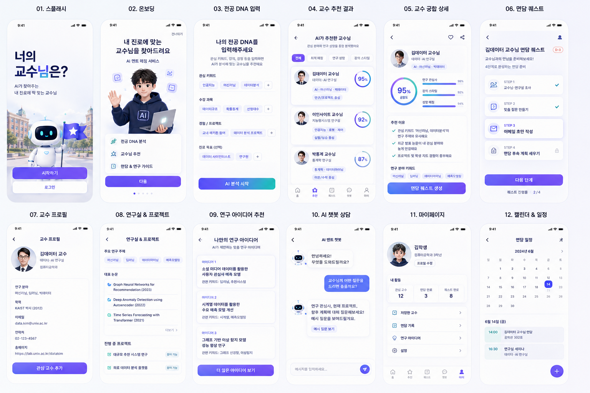
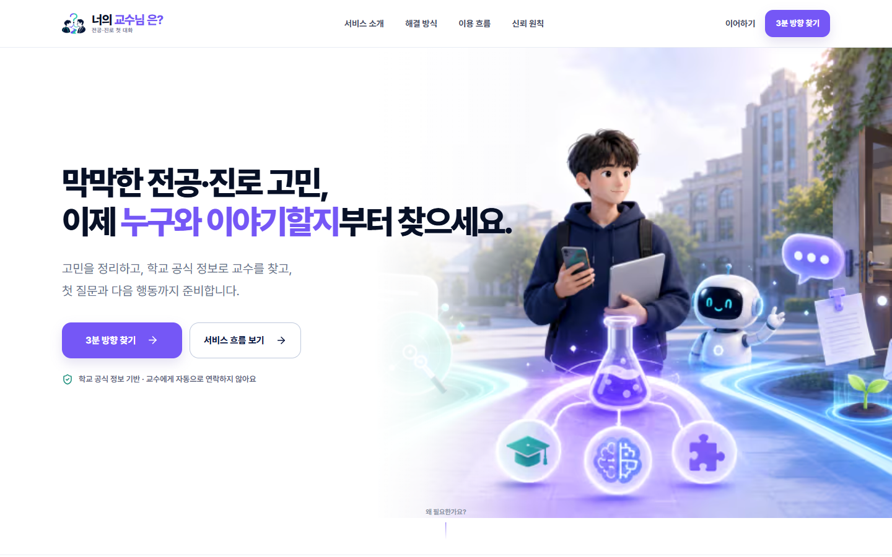
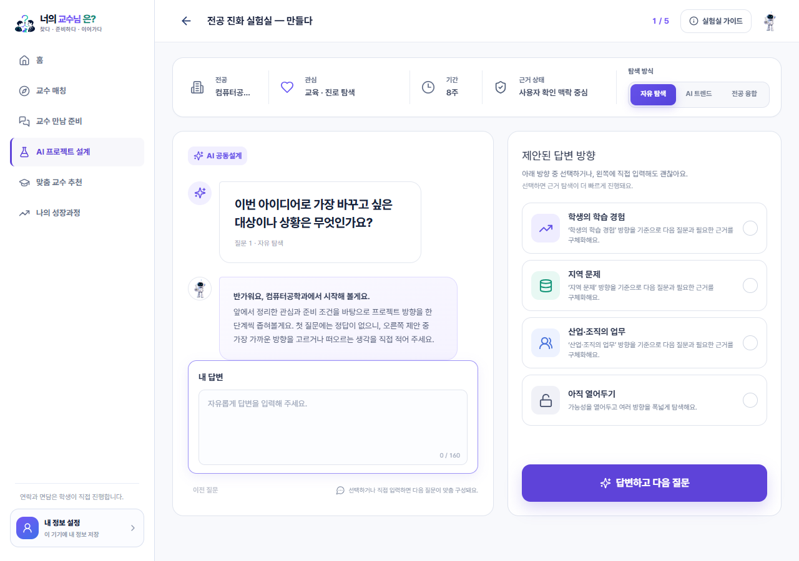
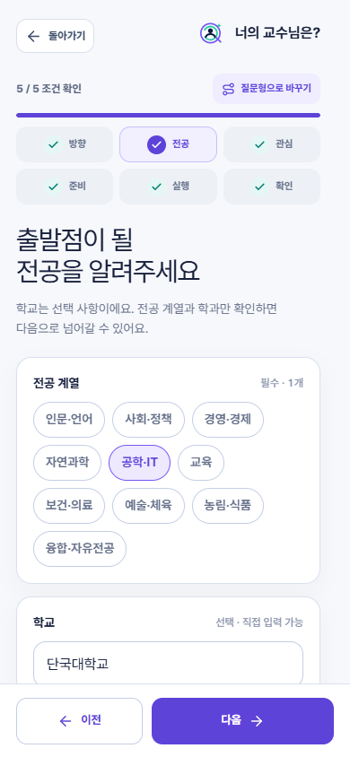

처음 · AI 추천 중심

결과를 빠르게 보여줬지만
왜 믿고, 다음에 무엇을 할지가 남았다.
TEAM TRION · FINAL DEVELOPMENT STORY
대학생의 고민을 정리하고, 학교 공식 정보로 교수를 찾고,
첫 질문과 다음 행동까지 연결한 MVP 성장 기록

PRODUCT EVOLUTION

결과를 빠르게 보여줬지만
왜 믿고, 다음에 무엇을 할지가 남았다.

공식 근거를 확인하고
첫 질문과 다음 행동으로 이어간다.
END-TO-END USER JOURNEY
기능을 나열하지 않고, 지금 필요한 다음 행동이 자연스럽게 이어지도록 설계했습니다.
한 번에 한 질문씩
전공·진로 고민을 말로 정리
같은 학과부터
주제·방법 연결까지 비교
논문 한입·첫 질문·
학생이 검토하는 이메일
공통 질문과 맞춤 질문으로
주제·방법·범위를 구체화
프로젝트 실행에 필요한
전문성을 기준으로 재연결
SERVICE SCREEN MAP




TWO MATCHING CONTEXTS
학생의 고민을 위한 첫 연결과, 프로젝트 실행을 위한 전문성 연결을 분리했습니다.
전공·진로·수업·취업 고민을 첫 대화로 옮기는 연결
구체화된 프로젝트의 주제·방법·확장 가능성을 위한 연결
AI CO-DESIGN
고정 설문과 완전 자유대화 사이에서, 일관성과 개인화를 함께 가져갔습니다.
문제 · 대상 · 기대 변화
답변의 빈칸과 조건을 더 구체화
차이 · 근거 · 확인 필요 항목

AI는 정답을 확정하지 않습니다.
사용자가 비교하고 다음 질문을 만들 수 있도록 생각을 구조화합니다.
TRUST & EVIDENCE MODEL
학생이 직접 입력하거나 선택한 고민·관심·프로젝트
학교·학과·교수 공식 프로필에서 확인한 정보와 출처
사용자 입력과 제공된 근거를 바탕으로 만든 질문과 방향
면담·모집·최신 일정처럼 교수에게 직접 물어봐야 할 내용
RESPONSIVE UX


MENTORING → PRODUCT DECISIONS
전공 DNA·아이디어·교수 추천을 화면으로 구현
질문결과를 본 다음은?궁합 점수와 순위를 걷고 출처·연결 이유를 남김
판단AI는 결정자가 아니다논문 한입·첫 질문·이메일·7일 행동까지 연결
변화결과 → 첫 대화랜딩·튜토리얼·상태 기반 홈·서비스 허브 완성
원칙한 화면, 한 과업맞춤 질문과 두 교수 연결 목적을 분리
정교화나의 고민 ≠ 프로젝트 실행관심·프로젝트·교수·다음 행동을 하나의 경험으로 보존
현재추천 한 번 → 성장 과정CODEX × CLAUDE VIBE CODING · LESSON 1–2
“오늘 완성할 수 있는가?”
프로젝트를 한 문장으로 정의
한 사이클을 끝까지 돌기
환경변수·Git·GitHub

아이디어는 있지만 어디서부터 구현해야 할지 막막한 사람에게 추천합니다.